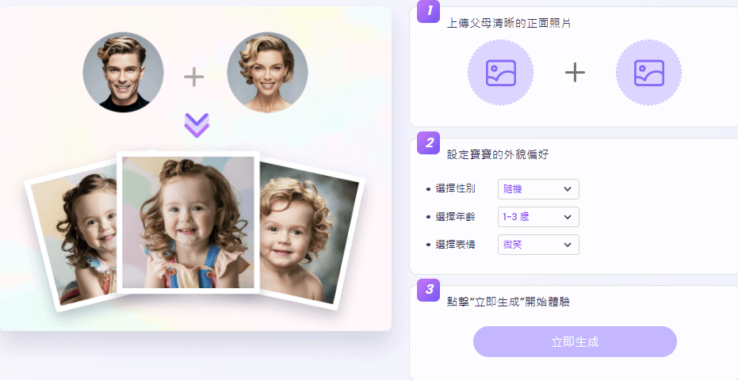
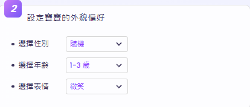
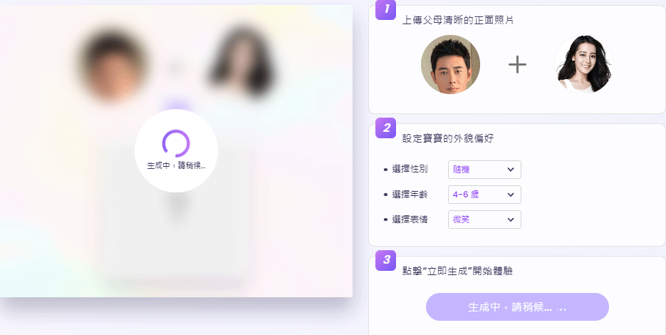

AI 寶寶合成器
Vidnoz AI 提供一種 寶寶長相預測的功能。
透過 AI 技術分析父母的照片，生成可能的寶寶樣貌。
以下是 Vidnoz AI 生成寶寶照片的基本流程：
使用步驟
步驟 2：選擇性別、年齡與表情
部分 AI 工具允許使用者選擇寶寶的性別與年齡範圍（如嬰兒、幼兒），讓預測結果更具個性化。
步驟 3：生成寶寶照片
AI 最終會輸出一張可能的寶寶照片，模擬其外觀，並提供下載或分享功能。

成品
這項技術主要是 娛樂性質，並非真正的基因預測工具，但可用於 家庭樂趣、社交媒體分享 或 情侶互動！

注意事項
為了確保最佳的生成效果，請在使用本工具前注意以下事項：
- 圖片格式： 請使用清晰的 JPG 或 PNG 格式圖片，以確保識別準確性。
- 圖片品質： 建議上傳高解析度、光線充足且無過多遮擋的正面人像。
- 照片角度： 需使用正臉照片，側臉或模糊照片可能影響合成效果。
- 合成結果： AI 預測的寶寶形象僅供娛樂參考，實際情況可能有所不同。
- 背景影響： 簡單背景有助於 AI 更準確識別人像並提升生成效果。
返回首頁